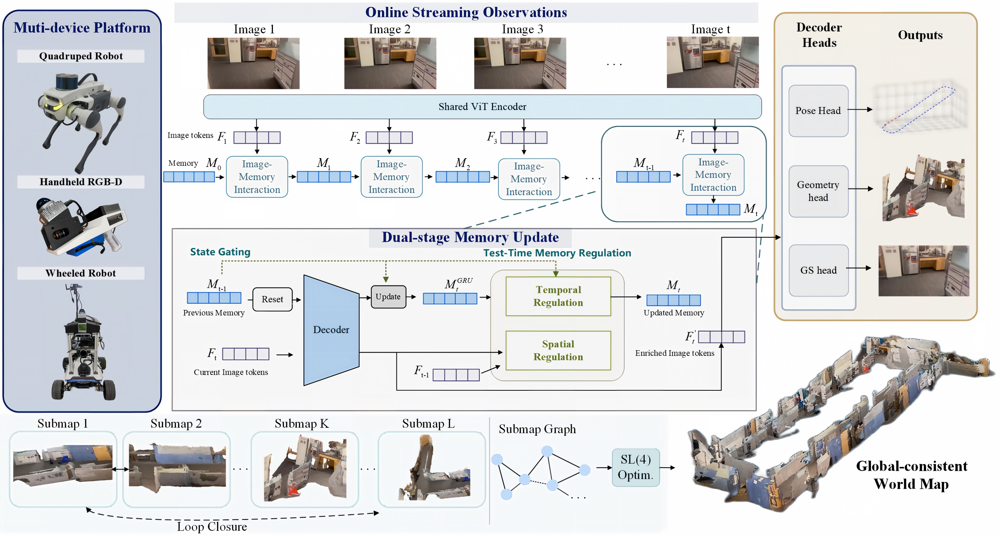

Paper Notes
Problem and System Output
AWM 研究如何把短窗口 3D foundation model 扩展为可持续的机器人世界模型。输入是长 RGB 流，输出同时包含相机位姿、密集 pointmap、置信度和可渲染 3D Gaussian。
核心不是单独训练一个语义头，而是把 memory 作为定位、重建和 Gaussian rendering 的共享中间表示。
Paper Notes
Adaptive World Memory

Tianchen Deng et al. · Original figure, unmodified · arXiv paper license · Paper & Caption ↗
每帧视觉编码器产生 geometry-aware tokens，与当前 active submap 的 recurrent memory 交互。第一阶段是 transformer reset/update gates：reset gate 抑制过时历史，update gate 控制 candidate memory 写入。
第二阶段在测试时根据 temporal state evolution 和 spatial observation-state consistency 生成 token-wise adaptive mask；快速变化 token 更积极更新，稳定 token 被保留。
Paper Notes
Submaps and Global Consistency
单个全局状态容易被低重叠、遮挡或重复结构污染，因此 AWM 将 memory 分成 local submaps。每个 submap 保存局部 memory、keyframes、poses、pointmaps 和 Gaussians。
在线流程先用预测 pose 对齐 active submap，再插入可靠点和 Gaussian；重访时通过 loop closure 与 SL(4)-based optimization 对齐局部 submaps。局部 token 更新与全局优化分工不同，不能把二者混成同一 loss。
Paper Notes
Gaussian Reconstruction Head
memory-enhanced features 预测 pointmap、confidence、pose 和 Gaussian attributes。Gaussian center 直接锚定在 active-submap coordinate 的 pointmap，不再额外做 depth back-projection。
opacity、scale、rotation、color 由 pixel-wise head 预测，Gaussian confidence 使用 geometry confidence 的 stop-gradient metadata；低置信度 primitive 不插入地图。渲染 loss 由 photometric、structural 和 perceptual terms 组成，不需要 ground-truth Gaussian。
M_t = M_{t-1} + A_t ⊙ (M̃_t − M_{t-1})
G_i.center = P_i^{submap}
L = L_pointmap + L_pose + L_render + L_regularizationPaper Notes
Training and Inference
训练同时监督几何、位姿和 rendering；课程训练先稳定几何/姿态，再加入 Gaussian rendering。测试时 memory regulation 不需要额外标注，依据状态变化和 cross-attention/feature divergence 决定更新。
作者强调代码和数据将公开，但本次阅读未独立复现训练数据和全部配置，因此下文只记录论文明确的机制和摘要/正文可核查数字。
Paper Notes
Experiments and Efficiency
论文在公开 benchmark 和多平台自采数据上评估，包括 wheeled robot、handheld 和 quadruped。官方项目摘要给出单 RTX 4090 约 17.5 FPS、7GB GPU memory；CUT3R 为约 20.5 FPS、8GB，但速度和质量存在取舍。
实验报告轨迹准确度、重建完整度和渲染质量优于若干 3D foundation reconstruction 与 SLAM 基线。由于论文将多种平台、子图和后端同时引入，不能把全部提升单独归因于 token gate。
Paper Notes
Transfer to LingBot-Map
AWM 给 LingBot-Map 的启发是：语义如果进入 memory，最好和几何一致性共同决定 token 更新，而不是只做输出端分类。可将语义一致性加入 spatial regulation，或作为写入前 gate 的额外证据。
但 AWM 的 submap、Gaussian head、loop closure 和 memory regulation 组合很大；直接迁移会无法定位贡献。对 LingBot-Map 应先固定 backbone 和缓存预算，只加入一个语义调制位置，再用未来帧几何、语义一致性和更新率消融。
Paper Notes
Limitations and Conclusions
AWM 不是开放词汇语义地图，也没有证明 VLM 特征会改善几何。其主要贡献是将 adaptive recurrent memory、submap global consistency 和 Gaussian rendering 放入一个可扩展系统。
对我们的研究，最可复用的是双阶段更新和局部子图隔离；最需要谨慎的是系统规模与训练数据披露。语义 guidance 的 claim 仍需由独立对照验证。
Discussion
Reading Questions
Is AWM a semantic memory model?
不是。论文核心是几何 memory 与 Gaussian rendering；没有把开放词汇语义作为主要存储对象。
Why use submaps?
将局部错误限制在局部状态，避免单个全局 recurrent memory 被长序列污染。
What should we borrow for LingBot-Map?
先借鉴 token-level temporal/spatial update gating，再单独测试语义是否提供额外更新证据。
References
First submitted 2026-09-18. Read 2609.21502v1 on 15 November 2026. One original figure is reproduced for scholarly discussion. Experimental results are reported by the authors and have not been independently reproduced.
Verified on 2026-11-15. Paper results refer to the linked versions. Repository references were checked on this date.